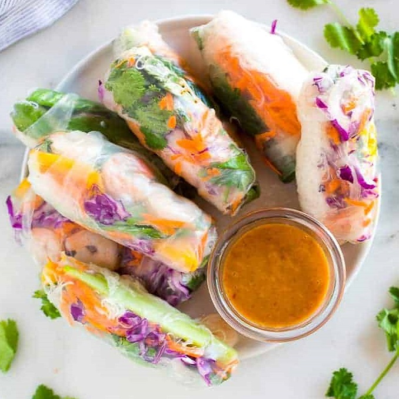
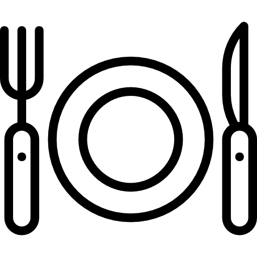

Лаборатория рецептов: ежедневная доза кулинарного вдохновения, где рецепты становятся произведениями искусства
etheh
ВЫБОР РЕДАКЦИИ

The Recipe Lab
Лабаратория рецептов
Лаборатория рецептов: ежедневная доза кулинарного вдохновения, где рецепты становятся произведениями искусства
etheh
ВЫБОР РЕДАКЦИИ
Запеченная цветная капуста с хумусом, оливками и фетой
Есть богатство от жареной цветной капусты, соленый вкус от оливок, и все это сочетается со сливочным хумусом. Увенчан острой фетой и некоторыми травами или микрозеленью.
Время приготовления:
1 час 30 минут

Колличество порций
8
Сложность
★ ★ ★ ☆ ☆
Категория
Веганское
Ингредиенты
Основа
1 большой кочан цветной капусты или 2 маленьких!
1 большой кочан цветной капусты или 2 маленьких!
1/2 чайной ложки соли
1/2 чайной ложки перца
1/4 чайной ложки молотого красного перца
3 столовые ложки оливкового масла
1/2 стакана оливок каламата без косточек и нарезанных ломтиками
1/4 чашки сыра фета
1 горсть свежей зелени или микрозелени
Для хумуса
25-унциевая банка нута, высушенная и промытая
1 чашка пасты тахини
2 измельченных зубчика чеснока
1/2 лимонного сока
1/2 чайной ложки соли
1/2 чайной ложки перца
4-5 столовых ложек ледяной воды
3 столовые ложки оливкового масла + еще немного для сбрызгивания
свежая зелень для посыпки
Основное
Разогрейте духовку до 425 градусов по Фаренгейту.
Головку цветной капусты нарежьте крупными кусочками или просто разберите на соцветия. Поместите его на противень. Посыпьте цветную капусту измельченным чесноком. Сбрызните оливковым маслом. Приправьте цветную капусту солью, перцем и хлопьями красного перца.
Запекайте цветную капусту в течение 20-25 минут, пока она не станет золотисто-коричневой и не подрумянится. Пока цветная капуста запекается, приготовьте хумус.
СКогда все будет готово, выложите немного хумуса на тарелку или в миску и сверху положите цветную капусту. По желанию сбрызните оливковым маслом. Посыпать оливками, фетой, зеленью или микрозеленью.
Хумус
Поместите нут, тахини, лимонный сок, чеснок, соль и перец в кухонный комбайн. Пюрируйте до тех пор, пока нут не раскрошится и смесь не начнет собираться (в этот момент она, вероятно, не будет однородной!). Не забудьте почистить края шпателем. Сбрызнуть ледяной водой. Смешайте его в течение минуты или двух — просто дайте ему уйти! Как только вода будет налита, хумус действительно должен стать однородным — если вам нужно немного больше воды, добавляйте ее по 1 столовой ложке за раз. Полить оливковым маслом. Попробуйте и при необходимости приправьте солью и перцем.
Не ищите спринг-роллов ресторанного качества, которые невероятно просты в приготовлении, вкусны и полезны! Мне нравится подавать их с домашним арахисовым соусом для макания, и они станут отличным легким обедом, ужином или закуской.
Время приготовления:
30 минут
Колличество порций
8
Сложность
★ ★ ☆ ☆ ☆
Категория
Завтрак
Ингредиенты
Основа
1 упаковка рисовой обертки для спринг-роллов
1 упаковка рисовой лапши вермишель
2 манго, очищенных и нарезанных тонкими полосками
1 большая морковь, очищенная и натертая или нарезанная тонкими полосками
1 большой английский огурец, очищенный и тонко нарезанный
1 фунт маленьких вареных креветок, очищенных от хвостов или заменителей курицы
1 пучок свежих листьев мяты/li>
1 пучок свежих листьев базилика
1 пучок свежей кинзы/li>
Для соуса
3/4 стакана сладкого соуса чили
1/3 стакана арахисового масла, гладкого или хрустящего
Отварите лапшу вермишель в кипящей воде всего несколько минут, согласно инструкции на упаковке.
Слейте воду и промойте холодной водой.
Соберите вместе все ингредиенты для начинки, включая нарезанные овощи, травы, приготовленные креветки.
Поместите одну рисовую обертку в воду и дайте пропитаться всего 10-15 секунд. Он все еще должен быть довольно твердым, когда вы вынимаете его и кладете на прилавок или тарелку.
(Он размякнет, когда вы добавите ингредиенты для начинки, но если вы дадите ему пропитаться слишком долго, он станет слишком мягким и порвется, когда вы его свернете.)
Выложите по 1-2 ломтика каждого овоща, несколько креветок, несколько листьев каждой травы и щепотку лапши на ⅓ ближнего к вам спринг-ролла.
Сложите стороны спринг-ролла поверх ингредиентов. Затем потяните ближнюю к вам сторону вверх и поверх ингредиентов, плотно запечатайте все вместе и сверните, как буррито.
Соус
Добавьте все ингредиенты в кухонный комбайн или блендер и измельчите до получения однородной массы.